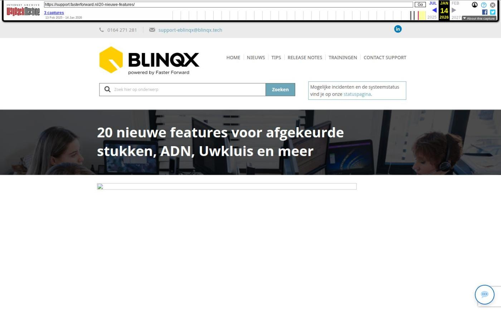

20 nieuwe features voor afgekeurde stukken, ADN, Uwkluis en meer

Tekstinhoud
Op dinsdag 4 juli is Elements weer verbeterd en uitgebreid met nieuwe features! Deze release bevat uitbreidingen en optimalisaties voor advieskantoren en serviceproviders.
Advieskantoren
Managementinformatie afgekeurde stukken per maand uitgebreid
Nieuwe features Uwkluis
Producten consumptief krediet en vermogen & bancair zichtbaar in Uwkluis
Taal in te stellen op iedere pagina
Taak in Elements bij versturen bericht
Tabblad Documenten overzichtelijker
Documentenkiezer verbeterd
Informatie ophalen over gemiddelde doorlooptijden
Diverse verbeteringen mutatievoorstellen
Rappeltaken verduidelijkt
Verbetering in rappeltaken aanmaken
In één oogopslag duidelijk in welke batch er een conflict bevindt
Inzicht in mutatievoorstel
Gemakkelijk polisnummer wijzigen via ADN
ADN-bericht met gesloten RC periode boeken
Nieuwe dekkingen volgens SIVI toegevoegd
Serviceprovider
Afgekeurd stuk zichtbaar in Uwkluis
Duidelijk wanneer er nog niet verwerkte DA-berichten zijn
Gemakkelijk documenten koppelen aan een stuk
Uitgebreide rapportage over de hypotheekaanvragen
Aanvraag wijzigen in Fastlane
Overige verbeteringen serviceprovider
Overige verbeteringen
Advieskantoren
Managementinformatie afgekeurde stukken per maand uitgebreid
Het is nu mogelijk om in de grafiek Afgekeurde stukken per maand (managementinformatie) door te klikken en te filteren. Zo kan je per periode, kantoor, behandelaar en maatschappij zien hoeveel en welke soort documenten zijn afgekeurd. Op deze manier krijg je een duidelijk beeld van de documenten die niet 'First time right' zijn.
Nieuwe features Uwkluis
Producten consumptief krediet en vermogen & bancair zichtbaar in Uwkluis
In Uwkluis worden de producten consumptief krediet en vermogen & bancair getoond onder Producten mits deze in Elements op publiek staan. Zo heeft de eindconsument in Uwkluis een compleet beeld van zijn producten.
Taal in te stellen op iedere pagina
Iedere pagina in Uwkluis kan nu in het Nederlands of Engels worden weergegeven. Dit geef je aan door rechts bovenin op de juiste taal te klikken.
Taak in Elements bij versturen bericht
Vanaf nu wordt je erop geattendeerd wanneer de eindconsument vanuit Uwkluis een bericht verstuurd. Na het versturen van dit bericht wordt er een taak aangemaakt in Elements. Deze taak wordt aangemaakt op naam van de adviseur van het dossier of, indien niet aanwezig, de standaard adviseur die staat ingesteld in Advisor support relatie.
Tabblad Documenten overzichtelijker
In het tabblad Documenten zijn er diverse wijzigingen doorgevoerd, waardoor het tabblad overzichtelijker is. Zo wordt het document niet meer direct gedownload wanneer je op de naam klikt. Voor het downloaden is er een apart downloadicoon bij gekomen. Wanneer je nu op de naam klikt dan zie je een preview van het document. Middels het wijzigingsicoon kan je het document wijzigen.
Documentenkiezer verbeterd
Wanneer je in de e-mail bijlagen wilt toevoegen dan kan je ervoor kiezen om documenten uit het dossier toe te voegen. Het pop-upscherm wat dan verschijnt, is vernieuwd. Zo kan je middels het vergrootglasicoon het document inzien en middels het downloadicoon deze downloaden. Door op de naam te klikken selecteer je het document.
Informatie ophalen over gemiddelde doorlooptijden
Het is nu met tags mogelijk om informatie op te halen uit de module Gemiddelde doorlooptijden. Zo kan je eenvoudig vanuit het klantdossier voor de betreffende maatschappij zien wat de doorlooptijd is en wanneer en door wie deze is aangepast.
Diverse verbeteringen mutatievoorstellen
Er zijn meerdere verbeteringen voor het werken met mutatievoorstellen doorgevoerd.
Rappeltaken verduidelijkt
De rappeltaken zijn verduidelijkt. In de naam van de taak wordt weergegeven of het gaat om een royement of opschorting. Ook haalt de omschrijving van de taak door middel van de tag offertedeel – mutatievoorstel – omschrijving nu het veld 'Overige mutatie(s)' van het mutatievoorstel op. Zo kan je in de taak zien welke wijziging inclusief de overige mutaties je hebt doorgevoerd.
Verbetering in rappeltaken aanmaken
Bij het opschorten van het pakket of polis is het nu mogelijk om aan te geven dat je een rappeltaak wilt aanmaken.
Daarnaast komt het veld rappeldatum standaard op 'Ja' te staan wanneer je een nieuwe polis opvoert. Op deze manier wordt er standaard een taak aangemaakt, zodat je wordt geattendeerd of de informatie van de nieuwe polis is binnengekomen. Heb je geen behoefte aan de taak, zet dan dit veld op 'Nee'.
In één oogopslag duidelijk in welke batch er een conflict bevindt
In het overzicht van de ADN module wordt er per batch getoond of deze mutatieconflicten bevat. Zo hoef je niet iedere batch apart te openen om dit te controleren.
Inzicht in mutatievoorstel
In het mutatievoorstel wordt het duidelijker weergegeven wanneer het mutatievoorstel een prolongatie op hoofdvervaldatum betreft.
Wanneer je werkt met de setting maatschappijcontrolerend dan komt het veld Status in het filter op het tabblad Mutatievoorstellen standaard op 'Alle' te staan, zodat je een direct overzicht hebt van alle openstaande en verwerkte mutatievoorstellen.
Gemakkelijk polisnummer wijzigen via ADN
Let op: deze feature is alleen beschikbaar als je werkt met mutatievoorstellen
Maatschappijen hebben de mogelijkheid om in één ADN bericht het oude polisnummer en het nieuwe polisnummer mee te sturen. Wanneer in het ADN bericht het oude en nieuwe polisnummer wordt meegestuurd zal Elements dit als een mutatievoorstel verwerken. In de poliskaart komt dan het nieuwe polisnummer en eventuele andere wijzigingen, bijvoorbeeld dekkingen, te staan. Voor de duidelijkheid maken we in dit geval ook een registratie aan.
ADN-bericht met gesloten RC periode boeken
Het kan gebeuren dat er een batch binnenkomt met een RC-periode (ver) in het verleden, maar dat deze periode in de boekhouding is afgesloten. Voorheen moest je deze periode aanmaken of openzetten om de batch verder te kunnen verwerken. Vanaf nu, als je werkt met ADN 3.0, is het mogelijk om per administratie in te stellen of er geboekt mag worden in een andere periode dan de RC periode van de batch. Dit als deze periode gesloten of niet aanwezig is. Zo heb je de keus in welke RC-periode je de batch wilt boeken. Hier lees je er meer over.
Nieuwe dekkingen volgens SIVI toegevoegd
Als via ADN en Aplaza berichten binnenkomen, worden de nieuwste, bijbehorende dekkingen en/of soorten documenten aangemaakt. Deze zijn namelijk uitgebreid volgens de SIVI richtlijnen van mei en juni. Hiermee zijn alle te selecteren verzekeringen up-to-date om correct te verwerken in een klantdossier.
Nieuwe dekkingen
Verzuim + Verzuimmanagement (combiverzekering)
Voertuigen beschadiging
Ongevallen medewerkers in vaste dienst
Ongevallen medewerkers in tijdelijke dienst
Ongevallen BHV(-ers)
Ongevallen DGA('s)
Service
Bemiddeling
Advies
Beheer
Serviceprovider
Afgekeurd stuk zichtbaar in Uwkluis
Uwkluis is zodanig aangepast, zodat deze gebruikt kan worden in combinatie met een serviceprovideromgeving. Je ziet nu ook wanneer en de reden waarom het stuk is afgekeurd.
Duidelijk wanneer er nog niet verwerkte DA-berichten zijn
Voor een serviceprovider is het belangrijk dat de HDN berichten in de juiste volgorde verwerkt en verstuurd worden. Dit geldt ook voor de DA-berichten. In de stukkenlijst wordt nu een melding getoond bij nog niet verwerkte binnengekomen DA-berichten. Zo weet de medewerker dat de stukkenlijst niet up-to-date is en deze berichten eerst verwerkt moeten worden.
Gemakkelijk documenten koppelen aan een stuk
Vanuit het stuk historie kan de medewerker gemakkelijk eerder gekoppelde documenten inzien en opnieuw koppelen aan het stuk. Via het vergrootglasicoon krijg je een preview te zien van het document. Middels het koppelicoon kan je eerder gekoppeld document gemakkelijk opnieuw koppelen aan het stuk.
Uitgebreide rapportage over de hypotheekaanvragen
De medewerker kan uitgebreide gegevens inzien over hypotheekaanvragen middels een nieuw aangemaakte rapportage Inzicht Hypotheekaanvragen. Deze is gebaseerd op de rapportage Management – Hypotheken – Doorlooptijden en is uitgebreid met serviceprovider specifieke kolommen, bijvoorbeeld formule en volmacht.
Aanvraag wijzigen in Fastlane
Voor serviceproviders is het mogelijk om een verstuurde aanvraag vanuit de intermediair gemakkelijk te wijzigen in Fastlane. In de hypotheekkaart klik je op 'Aanvraag wijzigen in Fastlane'. Vervolgens wordt je doorgeleid naar het tabblad Fastlane. Vanuit daar kom je terecht in de juiste aanvraag. Zo hoeft de intermediair de aanvraag niet zelf te corrigeren en dit scheelt tijd.
Overige verbeteringen serviceprovider
De status van stukken worden automatisch aangepast bij binnenkomst van een DA-bericht vanuit de maatschappij. Hierdoor hoeft de medewerker deze status niet handmatig aan te passen.
De gegevens van een volmacht organisatie worden meegestuurd in een HDN bericht.
De serviceprovider kan de status van een afgekeurd stuk communiceren naar de intermediair. Wanneer de maatschappij het stuk heeft afgekeurd, krijgt het stuk een aparte status. De serviceprovider controleert eerst of het stuk terecht is afgekeurd om vervolgens de juiste status te communiceren naar de intermediair.
Er zijn diverse nieuwe tags gemaakt die informatie geven of stukken wel of niet beoordeeld zijn door de serviceprovider en/of volmacht.
Overige verbeteringen
De pagina deelnemeroverzichten heeft een nieuwe lay-out gekregen, waardoor het beeld rustiger en duidelijker oogt.
De logica achter de tijdbalk in de hypotheekkaart en Uwkluis is veranderd, waardoor huisje 1 nu correct wordt afgevinkt. Voorheen werd deze afgevinkt als het veld 'Renteaanbod aangevraagd' gevuld stond. Nu wordt deze afgevinkt als er een AX is verzonden voor het betreffende product mits het niet een handmatig aangemaakt product is.
Het aanmaken van objecten vanuit ADN verwerking is verbeterd. Er wordt nu alleen een nieuw object aangemaakt, wanneer er geen match gemaakt kan worden op kenteken of merk/model/type en als er geen leeg object aanwezig is. Voorheen werd er altijd een object aangemaakt als er geen match gevonden kon worden, waardoor er veel (lege) dubbele objecten onder het tabblad Partijen & Objecten kwamen te staan.
Het is mogelijk om een bijlage met extensie .948 per e-mail te verzenden en te uploaden onder een dossier.
Geplaatst op 30 juni 2023 (Laatste update: 04 juli 2023)
Laatste 5 releasenotes
Verbeteringen onder de motorkap en gespreksopnames »
HDN release: afscheid van HDN certificaten »
Verbeterde verwerking van grote e-mailvolumes via Office 365 en voorbereiding HDN »
Nu zelf schade- en levensverzekeringen omnummeren »
Verbeteringen onder de motorkap en type documenten gecontroleerd »